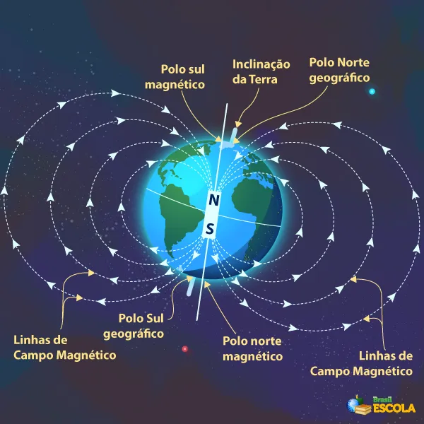

"De acordo com a teoria do geodínamo, o campo magnético da Terra é formado devido à alta temperatura do núcleo terrestre,
às correntes de convecção e ao efeito coriolis."

"O campo magnético da Terra é de suma importância para a manutenção da vida e da comunição terrestres, já que ele consegue
evitar a entrada das partículas solares, as quais, caso não fossem desviadas por ele, danificariam a camada de ozônio"